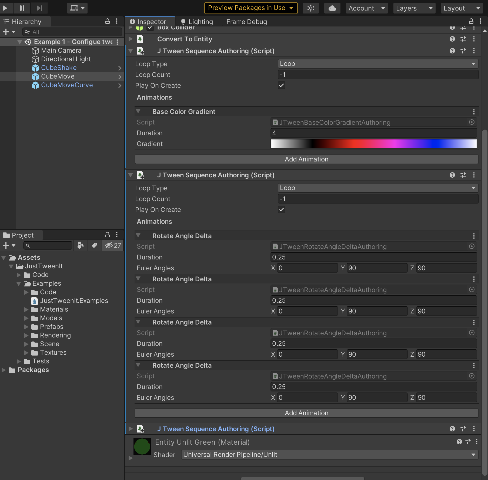

Basic Concepts¶
JTweenSequence¶
In JustTweenIt each tween is represented as a sequence of animations. To create a tween you should create a sequence on target entity and add animations to it:
var moveSequence = entity.AddSequence(dstManager);
moveSequence.Move(dstManager, new float3(0, 5, 0), 1f);
moveSequence.Move(dstManager, new float3(0, 0, 5), 1f);
moveSequence.Move(dstManager, new float3(0, -5, 0), 1f);
moveSequence.Move(dstManager, new float3(0, 0, -5), 1f);
You can start, pause and stop playing sequence:
moveSequence.Play(dstManager);
moveSequence.Pause(dstManager);
moveSequence.Stop(dstManager);
moveSequence.DestroySequence(dstManager);
Also you can setup sequence loop count and type:
moveSequence.SetLoop(dstManager, JTweenSequenceLoopType.PinPong, -1);
JustTweenIt supports 3 types of loops:
- Loop;
- LoopReverse;
- PinPong;
JTweenAnimation¶
JTweenAnimation is a smallest peace of tween sequence.
JustTweenIt provides several default animation implementations along with supporting custom user animations;
In package you can find animations for:
- Transforms:
- Move;
- Rotate;
- Scale;
- Shake;
- Colors:
- Lerp;
- Gradients;
JTween System Groups¶
JTween providers serveral system groups to user custom animations, such as:
- JTweenSystemGroup - is a main group of the JustTweenIt plugin. All systems and system groups executed in this system group. This system group executes in the Unity default SimulationSystemGroup;
- JTweenInitAnimationsSystemGroup - this groups contains systems for initialization animations before playing such as caching previous object position or randomizing shake.
- JTweenUpdateAnimationsSystemGroup - this group contains systems with logic for updating animations, such as moving and rotation objects.
- JTweenFinishAnimationSystemGroup - in this group can be made additional logic after finishing animation and before starting next animation in sequence.
Configure Tween In the Editor¶
The easiest way way to create tween is to setup it in the Inspector. To do it, you should add JTweenSequenceAuthoring component on Game Object. After that you can add animations to the sequence in the Inspector menu.
In plugin provided examples, scene 1: Example 1 - Configue tween from authoring components shows how to configure tweens in the scene.

Create and run tweens from the main thread¶
JustTweenIt creates sequence and animations in the main thread. In plugin provided examples, scene 2: Example 2 - Run tween from code in monobehavior shows how to create tween during conversion state.
To create a sequence you should call AddSequences(EntityManager entityManager) method on an entity you want animate.
public class ExampleRunTweenFromMonobehavior : MonoBehaviour, IConvertGameObjectToEntity
{
public void Convert(Entity entity, EntityManager dstManager, GameObjectConversionSystem conversionSystem)
{
var rotateSequence = entity.AddSequence(dstManager);
rotateSequence.Rotate(dstManager, new float3(0, 90, 90), 0.25f);
rotateSequence.Rotate(dstManager, new float3(0, 90, 90), 0.25f);
rotateSequence.Rotate(dstManager, new float3(0, 90, 90), 0.25f);
rotateSequence.Rotate(dstManager, new float3(0, 90, 90), 0.25f);
rotateSequence.SetLoop(dstManager, JTweenSequenceLoopType.Loop, -1);
rotateSequence.Play(dstManager);
var moveSequence = entity.AddSequence(dstManager);
moveSequence.Move(dstManager, new float3(0, 5, 0), 1f);
moveSequence.Move(dstManager, new float3(0, 0, 5), 1f);
moveSequence.Move(dstManager, new float3(0, -5, 0), 1f);
moveSequence.Move(dstManager, new float3(0, 0, -5), 1f);
moveSequence.SetLoop(dstManager, JTweenSequenceLoopType.PinPong, -1);
moveSequence.Play(dstManager);
var scaleSequence = entity.AddSequence(dstManager);
scaleSequence.Scale(dstManager, new float3(0.5f,0.5f,0.5f), 1f);
scaleSequence.Scale(dstManager, new float3(-0.5f,-0.5f,-0.5f), 1f);
scaleSequence.SetLoop(dstManager, JTweenSequenceLoopType.Loop, -1);
scaleSequence.Play(dstManager);
var colorSequence = entity.AddSequence(dstManager);
colorSequence.BaseColorTo(dstManager,new float4(1,1,1,1),1f );
colorSequence.BaseColorTo(dstManager, new float4(1,0,0,1),1f );
colorSequence.BaseColorTo(dstManager, new float4(0,1,0,1),1f );
colorSequence.BaseColorTo(dstManager, new float4(0,0,1,1),1f );
colorSequence.SetLoop(dstManager, JTweenSequenceLoopType.Loop, -1);
colorSequence.Play(dstManager);
}
}
Create and run tweens from the job system¶
JustTweenIt also supports creating tweens in job system in parallel way. You can find this example in scene 3: Example 3 - Run tween from jobsystem
Creating tweens in the job system is a bit faster than on the main thread. It happens because JustTweenIt makes some pre-calculation of the data before add it to the ECS. All structural changes happen in JTweenPlaySequenceCommandsSystem on the main thread.
[UpdateInGroup(typeof(ExampleSystemsGroup))]
public class ExampleRunTweenFromJobSystem : SystemBase
{
private JTweenBeginSimulationEntityCommandBufferSystem _commandBufferSystem;
protected override void OnCreate()
{
base.OnCreate();
_commandBufferSystem = World.GetExistingSystem<JTweenBeginSimulationEntityCommandBufferSystem>();
}
protected override void OnUpdate()
{
var commandBuffer = _commandBufferSystem.CreateCommandBuffer().ToConcurrent();
Entities.WithAll<ExampleTweenTarget>().ForEach((Entity entity, int entityInQueryIndex) =>
{
var moveSequence = entity.AddSequence(commandBuffer, entityInQueryIndex, out var moveCommandBuffer);
moveSequence.Move(commandBuffer, entityInQueryIndex, ref moveCommandBuffer, new float3(0, 5, 0), 1f);
moveSequence.Move(commandBuffer, entityInQueryIndex, ref moveCommandBuffer, new float3(0, 0, 5), 1f);
moveSequence.Move(commandBuffer, entityInQueryIndex, ref moveCommandBuffer, new float3(0, -5, 0), 1f);
moveSequence.Move(commandBuffer, entityInQueryIndex, ref moveCommandBuffer, new float3(0, 0, -5), 1f);
moveSequence.SetLoop(commandBuffer, entityInQueryIndex, JTweenSequenceLoopType.PinPong, -1);
moveSequence.Play(commandBuffer, entityInQueryIndex, ref moveCommandBuffer);
var rotateSequence = entity.AddSequence(commandBuffer, entityInQueryIndex, out var rotateCommandBuffer);
rotateSequence.Rotate(commandBuffer,entityInQueryIndex, ref rotateCommandBuffer, new float3(0, 90, 90), 0.25f);
rotateSequence.Rotate(commandBuffer,entityInQueryIndex, ref rotateCommandBuffer, new float3(0, 90, 90), 0.25f);
rotateSequence.Rotate(commandBuffer,entityInQueryIndex, ref rotateCommandBuffer, new float3(0, 90, 90), 0.25f);
rotateSequence.Rotate(commandBuffer,entityInQueryIndex, ref rotateCommandBuffer, new float3(0, 90, 90), 0.25f);
rotateSequence.SetLoop(commandBuffer,entityInQueryIndex, JTweenSequenceLoopType.Loop, -1);
rotateSequence.Play(commandBuffer,entityInQueryIndex, ref rotateCommandBuffer);
var scaleSequence = entity.AddSequence(commandBuffer, entityInQueryIndex, out var scaleCommandBuffer);
scaleSequence.Scale(commandBuffer,entityInQueryIndex, ref scaleCommandBuffer, new float3(0.5f,0.5f,0.5f), 1f);
scaleSequence.Scale(commandBuffer,entityInQueryIndex, ref scaleCommandBuffer, new float3(-0.5f,-0.5f,-0.5f), 1f);
scaleSequence.SetLoop(commandBuffer,entityInQueryIndex, JTweenSequenceLoopType.Loop, -1);
scaleSequence.Play(commandBuffer,entityInQueryIndex, ref scaleCommandBuffer);
var colorSequence = entity.AddSequence(commandBuffer, entityInQueryIndex, out var colorCommandBuffer);
colorSequence.BaseColorTo(commandBuffer, entityInQueryIndex, ref colorCommandBuffer, new float4(1,1,1,1),1f );
colorSequence.BaseColorTo(commandBuffer, entityInQueryIndex, ref colorCommandBuffer, new float4(1,0,0,1),1f );
colorSequence.BaseColorTo(commandBuffer, entityInQueryIndex, ref colorCommandBuffer, new float4(0,1,0,1),1f );
colorSequence.BaseColorTo(commandBuffer, entityInQueryIndex, ref colorCommandBuffer, new float4(0,0,1,1),1f );
colorSequence.SetLoop(commandBuffer, entityInQueryIndex, JTweenSequenceLoopType.Loop, -1);
colorSequence.Play(commandBuffer, entityInQueryIndex, ref colorCommandBuffer);
}).ScheduleParallel();
_commandBufferSystem.AddJobHandleForProducer(Dependency);
Enabled = false; //disable test system after running animation
}
}
Process sequence callbacks and states¶
You can process callback from sequence by working with tags-components. Scene 6: Example 6 - Swapn from prefab and process callbacks shows how to process finishing sequence:
// process finish sequence callback. Burst disabled only for Debug.Log. You can safely process callbacks in jobs
Entities.WithoutBurst().WithAll<JTweenFinishedSequence>().ForEach((JTweenSequence sequence) =>
{
Debug.Log($"Sequence {sequence} finished!");
}).Run();
JustTweenIt supports such states for sequences:
- JTweenPlayingSequence
- JTweenFinishedSequence
- JTweenPausedSequence
- JTweenNotStartedSequence
Also you can process additional states in custom animations, such as:
- JTweenInitAnimation
- JTweenPlayingAnimation
- JTweenFinishedAnimation
- JTweenPausedAnimation
- JTweenAnimationPlayBackward
- JTweenAnimationPlayForward
Warning
- For processing JTweenInitAnimation state you should place your system into JTweenInitAnimationsSystemGroup;
- For processing JTweenPlayingAnimation state you should place your system into JTweenUpdateAnimationsSystemGroup;
- For processing JTweenFinishedAnimation state you should place your system into JTweenFinishAnimationSystemGroup;